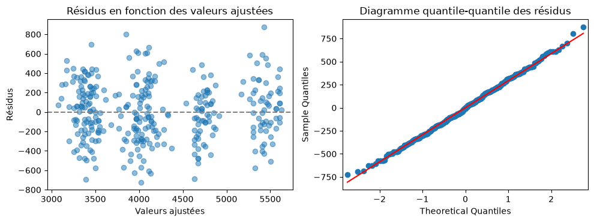

14. Modélisation statistique avec statsmodels#
Objectifs du chapitre
À la fin de ce chapitre, vous saurez :
ajuster un modèle de régression linéaire avec une formule (comme
lmen R) et lire ses résultats ;intégrer des variables qualitatives et des interactions ;
faire des prédictions et vérifier les résidus ;
ajuster une régression logistique et interpréter des odds ratios ;
réaliser les tests classiques (Student, khi-deux, ANOVA) avec
statsmodelsetscipy.stats.
Prérequis : chapitres 11 à 13, et des connaissances en statistique (régression, tests). Durée indicative : 2h.
Si vous avez déjà pratiqué la statistique avec R ou SAS, ce chapitre vous montre comment retrouver vos outils habituels en Python.
La bibliothèque statsmodels est la plus proche de l’esprit de R et de SAS : elle produit des tableaux de résultats complets (coefficients, erreurs standard, tests, intervalles de confiance…) et permet de décrire les modèles avec des formules très proches de celles de R.
Pour les tests statistiques élémentaires, on utilise aussi le module stats de la bibliothèque scipy.
Installation
statsmodels et scipy sont inclus dans Anaconda et dans Google Colab. Sinon : pip install statsmodels scipy.
import numpy as np
import pandas as pd
import matplotlib.pyplot as plt
import seaborn as sns
import statsmodels.formula.api as smf
import statsmodels.api as sm
from scipy import stats
manchots = pd.read_csv("donnees/penguins.csv").dropna()
titanic = pd.read_csv("donnees/titanic.csv")
Par convention, on importe l’interface « formules » de statsmodels sous le nom smf, et l’interface générale sous le nom sm.
Nous avons retiré d’emblée les manchots ayant des valeurs manquantes (dropna()), pour que tous les modèles portent sur les mêmes 333 individus.
14.1. Correspondances avec R et SAS#
Objectif |
R |
SAS |
Python |
|---|---|---|---|
Régression linéaire |
|
|
|
Résultats détaillés |
|
(sortie de la procédure) |
|
Variable qualitative |
|
instruction |
|
Régression logistique |
|
|
|
GLM (Poisson…) |
|
|
|
Table d’ANOVA |
|
|
|
Test de Student |
|
|
|
Test du khi-deux |
|
|
|
Corrélation |
|
|
|
Prédictions |
|
|
|
14.2. La régression linéaire#
14.2.1. Un premier modèle#
Modélisons la masse d’un manchot en fonction de la longueur de sa nageoire.
La syntaxe est presque celle de R : une formule "y ~ x" (sous forme de chaîne de caractères), le DataFrame passé en argument data, puis la méthode fit() qui ajuste le modèle :
modele = smf.ols("body_mass_g ~ flipper_length_mm", data=manchots).fit()
print(modele.summary())
OLS Regression Results
==============================================================================
Dep. Variable: body_mass_g R-squared: 0.762
Model: OLS Adj. R-squared: 0.761
Method: Least Squares F-statistic: 1060.
Date: Sat, 10 Oct 2026 Prob (F-statistic): 3.13e-105
Time: 13:02:52 Log-Likelihood: -2461.1
No. Observations: 333 AIC: 4926.
Df Residuals: 331 BIC: 4934.
Df Model: 1
Covariance Type: nonrobust
=====================================================================================
coef std err t P>|t| [0.025 0.975]
-------------------------------------------------------------------------------------
Intercept -5872.0927 310.285 -18.925 0.000 -6482.472 -5261.713
flipper_length_mm 50.1533 1.540 32.562 0.000 47.123 53.183
==============================================================================
Omnibus: 5.922 Durbin-Watson: 2.102
Prob(Omnibus): 0.052 Jarque-Bera (JB): 5.876
Skew: 0.325 Prob(JB): 0.0530
Kurtosis: 3.025 Cond. No. 2.90e+03
==============================================================================
Notes:
[1] Standard Errors assume that the covariance matrix of the errors is correctly specified.
[2] The condition number is large, 2.9e+03. This might indicate that there are
strong multicollinearity or other numerical problems.
ols signifie Ordinary Least Squares (moindres carrés ordinaires).
Dans un notebook, écrire simplement modele.summary() (sans print) affiche les mêmes résultats sous forme de tableaux mis en forme.
La sortie de summary() ressemble beaucoup à celle de R ou de SAS :
en haut, les caractéristiques globales : nombre d’observations, \(R^2\) (
R-squared) et \(R^2\) ajusté, statistique de Fisher et sa p-valeur, critères AIC et BIC ;au milieu, le tableau des coefficients : estimation (
coef), erreur standard, statistique t, p-valeur (P>|t|) et intervalle de confiance à 95 % ;en bas, quelques diagnostics sur les résidus (normalité, autocorrélation).
Ici, chaque millimètre de nageoire supplémentaire est associé, en moyenne, à environ 50 g de masse en plus, et le modèle explique 76 % de la variance de la masse.
14.2.2. Accéder aux résultats#
Comme en R (coef(modele), confint(modele)…), chaque élément du résultat est accessible séparément, ce qui permet de l’utiliser dans la suite d’un programme :
print(modele.params) # coefficients (une Series)
print(modele.rsquared) # R²
print(modele.pvalues) # p-valeurs
print(modele.conf_int()) # intervalles de confiance (un DataFrame)
Intercept -5872.092683
flipper_length_mm 50.153266
dtype: float64
0.7620921573403913
Intercept 1.183941e-54
flipper_length_mm 3.132836e-105
dtype: float64
0 1
Intercept -6482.472236 -5261.713130
flipper_length_mm 47.123390 53.183142
Les attributs modele.fittedvalues et modele.resid contiennent les valeurs ajustées et les résidus, et modele.nobs le nombre d’observations utilisées.
14.2.3. Variables qualitatives et interactions#
Les formules acceptent les mêmes constructions qu’en R :
Formule |
Signification |
|---|---|
|
deux variables explicatives |
|
|
|
effets principaux et interaction ( |
|
interaction seule |
|
transformation d’une variable |
|
calcul arithmétique dans la formule |
|
modèle sans constante |
Les colonnes de texte sont automatiquement traitées comme qualitatives, mais il est plus lisible (et indispensable pour une variable codée par des nombres, comme une classe 1, 2, 3) d’écrire C(...) :
modele2 = smf.ols("body_mass_g ~ flipper_length_mm + C(species) + C(sex)", data=manchots).fit()
print(modele2.summary().tables[1]) # seulement le tableau des coefficients
===========================================================================================
coef std err t P>|t| [0.025 0.975]
-------------------------------------------------------------------------------------------
Intercept -365.8174 532.050 -0.688 0.492 -1412.479 680.844
C(species)[T.Chinstrap] -87.6345 46.347 -1.891 0.060 -178.810 3.541
C(species)[T.Gentoo] 836.2600 85.185 9.817 0.000 668.681 1003.839
C(sex)[T.MALE] 530.3811 37.810 14.027 0.000 456.000 604.762
flipper_length_mm 20.0249 2.846 7.037 0.000 14.427 25.623
===========================================================================================
Le coefficient C(sex)[T.MALE] s’interprète ainsi : à longueur de nageoire et espèce égales, les mâles pèsent en moyenne 530 g de plus que les femelles (la modalité de référence, FEMALE, est la première par ordre alphabétique).
Pour choisir une autre modalité de référence : C(species, Treatment(reference="Gentoo")).
14.2.4. Prédire#
La méthode predict calcule les prédictions pour de nouvelles observations, fournies sous la forme d’un DataFrame ayant les mêmes noms de colonnes que les données d’origine :
nouveaux = pd.DataFrame({
"flipper_length_mm": [190, 220],
"species": ["Adelie", "Gentoo"],
"sex": ["FEMALE", "MALE"]
})
modele2.predict(nouveaux)
0 3438.916482
1 5406.305048
dtype: float64
Pour obtenir aussi les intervalles de confiance et de prédiction : modele2.get_prediction(nouveaux).summary_frame(alpha=0.05).
14.2.5. Vérifier les hypothèses#
Comme en R avec plot(modele), on vérifie l’absence de structure dans les résidus et leur normalité approximative :
fig, axes = plt.subplots(1, 2, figsize=(10, 3.8))
axes[0].scatter(modele2.fittedvalues, modele2.resid, alpha=0.5)
axes[0].axhline(0, color="grey", linestyle="--")
axes[0].set_xlabel("Valeurs ajustées")
axes[0].set_ylabel("Résidus")
axes[0].set_title("Résidus en fonction des valeurs ajustées")
sm.qqplot(modele2.resid, line="s", ax=axes[1])
axes[1].set_title("Diagramme quantile-quantile des résidus")
fig.tight_layout()
plt.show()

14.2.6. Comparer des modèles et tables d’ANOVA#
La fonction sm.stats.anova_lm produit des tables d’analyse de la variance (avec typ=2 ou typ=3 pour les sommes des carrés de type II ou III, comme dans PROC GLM ou car::Anova en R) :
sm.stats.anova_lm(modele2, typ=2)
| sum_sq | df | F | PR(>F) | |
|---|---|---|---|---|
| C(species) | 1.314181e+07 | 2.0 | 75.217723 | 1.295035e-27 |
| C(sex) | 1.718958e+07 | 1.0 | 196.770645 | 2.414442e-35 |
| flipper_length_mm | 4.325617e+06 | 1.0 | 49.515732 | 1.154539e-11 |
| Residual | 2.865357e+07 | 328.0 | NaN | NaN |
Avec deux modèles emboîtés, elle réalise le test de Fisher de comparaison (comme anova(m1, m2) en R) :
sm.stats.anova_lm(modele, modele2)
| df_resid | ssr | df_diff | ss_diff | F | Pr(>F) | |
|---|---|---|---|---|---|---|
| 0 | 331.0 | 5.121196e+07 | 0.0 | NaN | NaN | NaN |
| 1 | 328.0 | 2.865357e+07 | 3.0 | 2.255839e+07 | 86.075999 | 4.215933e-41 |
Une ANOVA à un facteur n’est rien d’autre qu’une régression sur une variable qualitative :
anova_espece = smf.ols("body_mass_g ~ C(species)", data=manchots).fit()
sm.stats.anova_lm(anova_espece, typ=2)
| sum_sq | df | F | PR(>F) | |
|---|---|---|---|---|
| C(species) | 1.451902e+08 | 2.0 | 341.894895 | 3.744505e-81 |
| Residual | 7.006945e+07 | 330.0 | NaN | NaN |
Si vous venez de R
Ne pas oublier
.fit():smf.ols(...)seul ne fait que définir le modèle.Comme
lmpar défaut,statsmodelssupprime les lignes ayant des valeurs manquantes dans les variables du modèle : vérifiez toujoursmodele.nobs.Il existe aussi une interface sans formule,
sm.OLS(y, X), plus proche de la notation matricielle ; elle n’ajoute pas de constante automatiquement (il faut utilisersm.add_constant(X)). Les formules sont plus simples pour commencer.Pour les modèles mixtes (
lme4), voirsmf.mixedlm; pour l’apprentissage automatique (forêts aléatoires, validation croisée…), la bibliothèque de référence estscikit-learn.
14.3. La régression logistique#
Pour une variable à expliquer binaire (0 / 1), on utilise la régression logistique, avec smf.logit (ou, de façon équivalente, smf.glm(..., family=sm.families.Binomial())).
Modélisons la survie des passagers du Titanic :
logit = smf.logit("survived ~ C(sex) + C(pclass) + age", data=titanic).fit()
print(logit.summary())
Optimization terminated successfully.
Current function value: 0.453279
Iterations 6
Logit Regression Results
==============================================================================
Dep. Variable: survived No. Observations: 714
Model: Logit Df Residuals: 709
Method: MLE Df Model: 4
Date: Sat, 10 Oct 2026 Pseudo R-squ.: 0.3289
Time: 13:02:52 Log-Likelihood: -323.64
converged: True LL-Null: -482.26
Covariance Type: nonrobust LLR p-value: 2.074e-67
==================================================================================
coef std err z P>|z| [0.025 0.975]
----------------------------------------------------------------------------------
Intercept 3.7770 0.401 9.416 0.000 2.991 4.563
C(sex)[T.male] -2.5228 0.207 -12.164 0.000 -2.929 -2.116
C(pclass)[T.2] -1.3098 0.278 -4.710 0.000 -1.855 -0.765
C(pclass)[T.3] -2.5806 0.281 -9.169 0.000 -3.132 -2.029
age -0.0370 0.008 -4.831 0.000 -0.052 -0.022
==================================================================================
L’argument disp=0 de fit() supprime le message sur la convergence de l’algorithme.
Remarquez le nombre d’observations : 714, car les 177 passagers sans âge ont été écartés.
Les coefficients sont exprimés sur l’échelle du logarithme de la cote (log-odds). Pour obtenir les odds ratios, comme dans la sortie de PROC LOGISTIC, on prend leur exponentielle, ainsi que celle des bornes des intervalles de confiance :
odds_ratios = pd.DataFrame({
"OR": np.exp(logit.params),
"IC 2.5 %": np.exp(logit.conf_int()[0]),
"IC 97.5 %": np.exp(logit.conf_int()[1]),
}).round(3)
odds_ratios
| OR | IC 2.5 % | IC 97.5 % | |
|---|---|---|---|
| Intercept | 43.685 | 19.902 | 95.890 |
| C(sex)[T.male] | 0.080 | 0.053 | 0.120 |
| C(pclass)[T.2] | 0.270 | 0.156 | 0.465 |
| C(pclass)[T.3] | 0.076 | 0.044 | 0.131 |
| age | 0.964 | 0.949 | 0.978 |
À classe et âge égaux, la cote de survie d’un homme est environ 12 fois plus faible que celle d’une femme (odds ratio de 0,08) ; chaque année d’âge supplémentaire multiplie la cote par 0,96.
La méthode predict donne ici des probabilités :
passagers = pd.DataFrame({"sex": ["female", "male"], "pclass": [1, 3], "age": [30, 30]})
logit.predict(passagers).round(3)
0 0.935
1 0.080
dtype: float64
14.4. Les tests statistiques classiques#
Le module scipy.stats fournit les tests usuels. Ils prennent en argument des Series (ou des tableaux) et retournent un résultat contenant la statistique et la p-valeur.
14.4.1. Comparer deux moyennes : test de Student#
Les mâles Adélie sont-ils plus lourds que les femelles ?
adelie = manchots[manchots["species"] == "Adelie"]
males = adelie.loc[adelie["sex"] == "MALE", "body_mass_g"]
femelles = adelie.loc[adelie["sex"] == "FEMALE", "body_mass_g"]
resultat = stats.ttest_ind(males, femelles, equal_var=False) # test de Welch
print(resultat.statistic, resultat.pvalue)
13.126285923485874 6.402319748031804e-26
equal_var=False correspond au test de Welch (le défaut de t.test en R) ; avec equal_var=True, on obtient le test de Student classique. Pour des échantillons appariés, on utilise stats.ttest_rel, et pour un test non paramétrique, stats.mannwhitneyu.
14.4.2. Indépendance de deux variables qualitatives : test du khi-deux#
La survie est-elle indépendante du sexe ?
tableau = pd.crosstab(titanic["sex"], titanic["survived"])
khi2, p, ddl, attendus = stats.chi2_contingency(tableau)
print(tableau)
print(f"khi-deux = {khi2:.1f}, ddl = {ddl}, p-valeur = {p:.2e}")
survived 0 1
sex
female 81 233
male 468 109
khi-deux = 260.7, ddl = 1, p-valeur = 1.20e-58
chi2_contingency retourne quatre valeurs (statistique, p-valeur, degrés de liberté et effectifs attendus sous l’hypothèse d’indépendance), que l’on récupère par déballage, comme un tuple (chapitre 7).
Remarquez qu’il applique par défaut la correction de continuité de Yates pour les tableaux 2 × 2, comme chisq.test en R.
14.4.3. Corrélation#
r, p = stats.pearsonr(manchots["flipper_length_mm"], manchots["body_mass_g"])
print(f"r = {r:.3f}, p-valeur = {p:.2e}")
r = 0.873, p-valeur = 3.13e-105
stats.spearmanr calcule la corrélation des rangs de Spearman.
Testez-vous
Quelle formule
statsmodelscorrespond au modèle Rlm(y ~ factor(groupe) + age, data = d)?Que se passe-t-il si l’on écrit
modele = smf.ols("y ~ x", data=d)puismodele.params?Comment obtenir l”odds ratio associé à une variable dans un modèle
logit?
Réponse
smf.ols("y ~ C(groupe) + age", data=d).fit().Une erreur (
AttributeError) : sans.fit(), le modèle est seulement défini, pas ajusté, et n’a donc pas de coefficients.En prenant l’exponentielle du coefficient :
np.exp(modele.params["nom_du_coefficient"]).
14.5. Exercices#
Rappel
Ces exercices sont à faire dans un notebook, avec pandas, numpy, statsmodels.formula.api as smf, statsmodels.api as sm et scipy.stats importés.
Exercice 14.1 : Le bec des manchots ★
Avec les manchots (sans valeurs manquantes) :
ajustez la régression de l’épaisseur du bec (
bill_depth_mm) sur sa longueur (bill_length_mm). Quel est le signe de la pente ?ajoutez l’espèce comme variable explicative. Que devient le signe de la pente ? Comment l’expliquer (pensez au nuage de points coloré par espèce du chapitre 13) ?
Solution
import pandas as pd
import statsmodels.formula.api as smf
manchots = pd.read_csv("donnees/penguins.csv").dropna()
m1 = smf.ols("bill_depth_mm ~ bill_length_mm", data=manchots).fit()
print(m1.params) # pente négative (environ -0.08)
m2 = smf.ols("bill_depth_mm ~ bill_length_mm + C(species)", data=manchots).fit()
print(m2.params) # pente positive (environ +0.20)
C’est un exemple classique de paradoxe de Simpson : au sein de chaque espèce, les becs plus longs sont aussi plus épais (pente positive), mais les Gentoo ont à la fois des becs longs et fins, ce qui inverse la tendance lorsqu’on mélange les espèces. Le modèle sans l’espèce confond l’effet de la longueur du bec et celui de l’espèce.
Exercice 14.2 : Interaction ★★
Le lien entre la longueur de la nageoire et la masse est-il le même pour les trois espèces ?
Ajustez un modèle avec interaction entre flipper_length_mm et species, puis comparez-le au modèle sans interaction avec un test de Fisher.
Solution
import pandas as pd
import statsmodels.formula.api as smf
import statsmodels.api as sm
manchots = pd.read_csv("donnees/penguins.csv").dropna()
sans = smf.ols("body_mass_g ~ flipper_length_mm + C(species)", data=manchots).fit()
avec = smf.ols("body_mass_g ~ flipper_length_mm * C(species)", data=manchots).fit()
print(avec.params)
print(sm.stats.anova_lm(sans, avec))
La p-valeur du test de comparaison (environ 0,005) indique que les pentes diffèrent un peu selon l’espèce : chez les Gentoo, la masse augmente plus vite avec la longueur de la nageoire.
Exercice 14.3 : Survie et tarif ★★
Ajustez une régression logistique de la survie sur le sexe, la classe et le prix du billet (
fare). Le prix du billet a-t-il un effet significatif une fois la classe prise en compte ?Remplacez
fareparnp.log1p(fare)(le logarithme de 1 + prix, car certains billets valent 0). Que constatez-vous ?Calculez la probabilité de survie prédite par le premier modèle pour un homme de 3e classe ayant payé 8 et pour une femme de 1re classe ayant payé 80.
Solution
import numpy as np
import pandas as pd
import statsmodels.formula.api as smf
titanic = pd.read_csv("donnees/titanic.csv")
m1 = smf.logit("survived ~ C(sex) + C(pclass) + fare", data=titanic).fit(disp=0)
print(m1.summary().tables[1]) # fare : p-valeur d'environ 0.4, non significatif
m2 = smf.logit("survived ~ C(sex) + C(pclass) + np.log1p(fare)", data=titanic).fit(disp=0)
print(m2.summary().tables[1]) # toujours non significatif
passagers = pd.DataFrame({"sex": ["male", "female"], "pclass": [3, 1], "fare": [8, 80]})
print(m1.predict(passagers).round(3)) # environ 0.10 et 0.91
Une fois la classe prise en compte, le prix du billet n’apporte presque plus d’information : prix et classe sont très liés.
Exercice 14.4 : Tests ★★
La longueur moyenne de la nageoire diffère-t-elle entre les manchots Adélie de l’île Dream et ceux de l’île Biscoe ? (Test de Welch.)
La survie sur le Titanic est-elle indépendante de la classe ? (Test du khi-deux.)
Retrouvez le résultat de la question 2 avec une régression logistique et un test du rapport de vraisemblance (attribut
llr_pvaluedu modèle).
Solution
import pandas as pd
import statsmodels.formula.api as smf
from scipy import stats
manchots = pd.read_csv("donnees/penguins.csv").dropna()
titanic = pd.read_csv("donnees/titanic.csv")
adelie = manchots[manchots["species"] == "Adelie"]
dream = adelie.loc[adelie["island"] == "Dream", "flipper_length_mm"]
biscoe = adelie.loc[adelie["island"] == "Biscoe", "flipper_length_mm"]
print(stats.ttest_ind(dream, biscoe, equal_var=False)) # p-valeur d'environ 0.4 : pas de différence mise en évidence
khi2, p, ddl, attendus = stats.chi2_contingency(pd.crosstab(titanic["pclass"], titanic["survived"]))
print(khi2, ddl, p) # khi-deux d'environ 102,9 à 2 ddl : dépendance très nette
m = smf.logit("survived ~ C(pclass)", data=titanic).fit(disp=0)
print(m.llr, m.llr_pvalue) # test du rapport de vraisemblance : même conclusion
14.6. Bilan du chapitre#
À retenir
import statsmodels.formula.api as smf;modele = smf.ols("y ~ x1 + C(x2)", data=df).fit();modele.summary().Résultats :
params,pvalues,conf_int(),rsquared,resid,fittedvalues,nobs; prédictions :modele.predict(nouveau_df).Formules :
C(x)(qualitative),x1 * x2(interaction),np.log(x),I(x ** 2).ANOVA :
sm.stats.anova_lm(modele, typ=2); comparaison de modèles emboîtés :sm.stats.anova_lm(m1, m2).Logistique :
smf.logit("y ~ ...", data=df).fit(); odds ratios :np.exp(modele.params).Tests :
stats.ttest_ind,stats.chi2_contingency,stats.pearsonr(modulescipy.stats).
Faites le point : êtes-vous capable de…
traduire un modèle
lmouglmde R (ou unePROC REG/PROC LOGISTIC) en Python ?lire le tableau de résultats d’un modèle et en extraire les coefficients et les p-valeurs ?
inclure une variable qualitative et une interaction dans un modèle ?
vérifier les résidus d’une régression linéaire ?
réaliser un test de Student ou du khi-deux ?